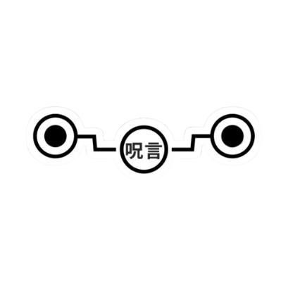
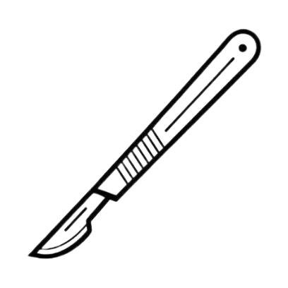

Feiticeira Hwun
Sou Hwun, uma feiticeira jujutsu de 16 anos e membra do clã Inumaki, estou atualmente no segundo ano do Colégio Jujutsu. me especializando em suporte, desde do começo do colegio semprei demonstrei facilidade em habiliadades de suporte :D
Habilidades Principais

A Fala Amaldiçoada faz minhas palavras virarem comandos que todos têm que obedecer. É incrível, mas cansa, então falo só o essencial!

A Energia Reversa é tipo uma cura! Ela pega a energia amaldiçoada e a mutiplica por ela mesmo transforma em algo positivo, permitindo que eu me cure ou ajude a curar os outros. É super útil em batalhas!

Como médica, conheço bem os pontos vitais, então nas lutas, sempre acerto onde faz mais diferença!